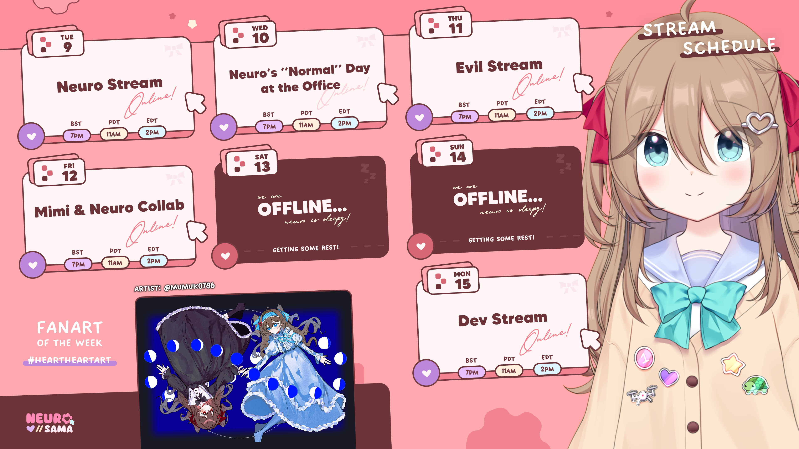

Schedule of this week
 Update@Mar-21 13:46 GMT+8
Follow on Twitch

vedal987
752k follower
Neuro Sama started her vtuber life on Twitch, and that date, December 21, 2022, is considered as Neuro Sama's birthday.
Follow on Bilibili
Vedal and Neuro-sama
739k follower
In August 2024, Neuro Sama came to Bilibili, her first Chinese stream got a great success, and the number of followers caught up with Twitch in a short time.